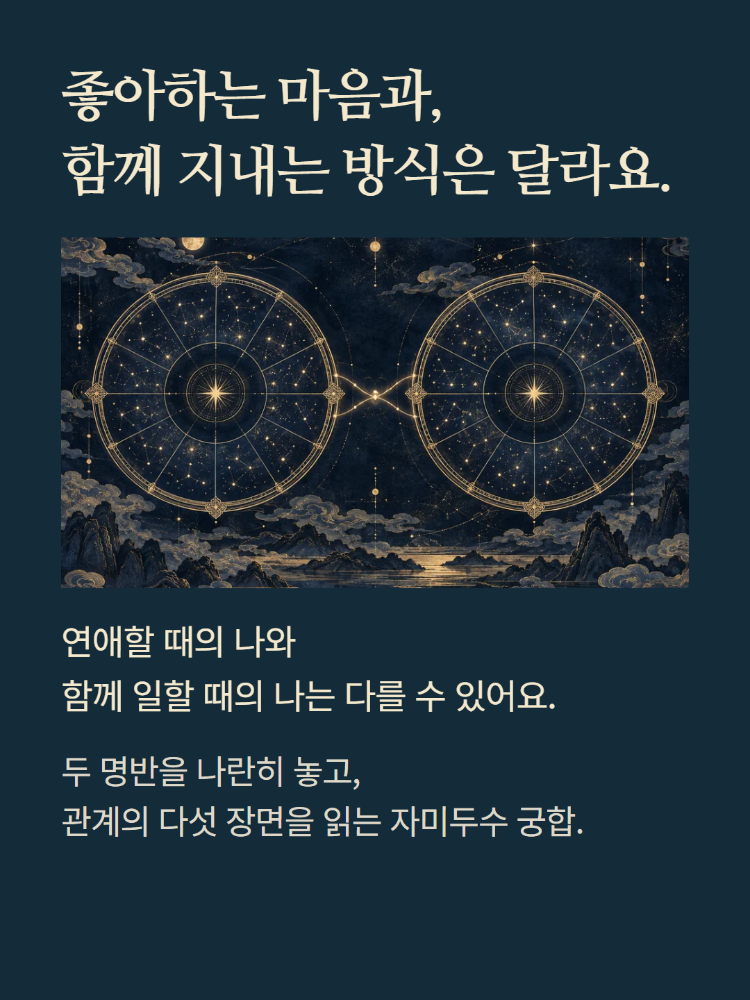
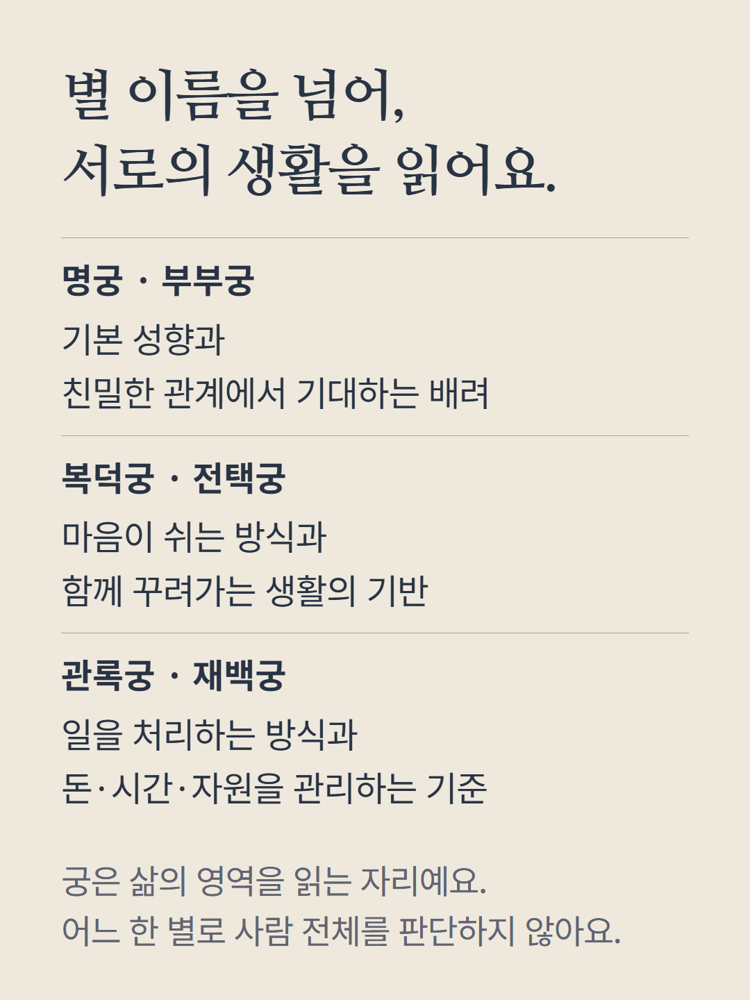
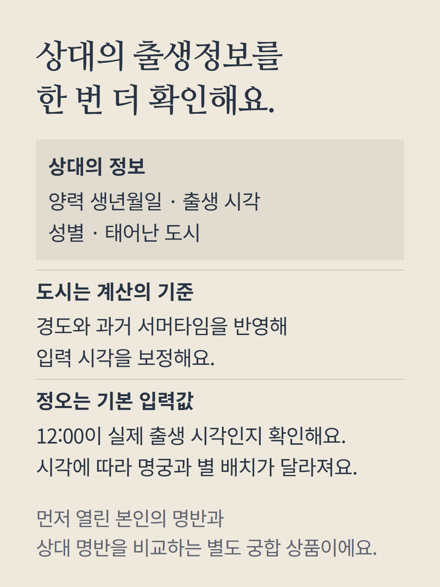
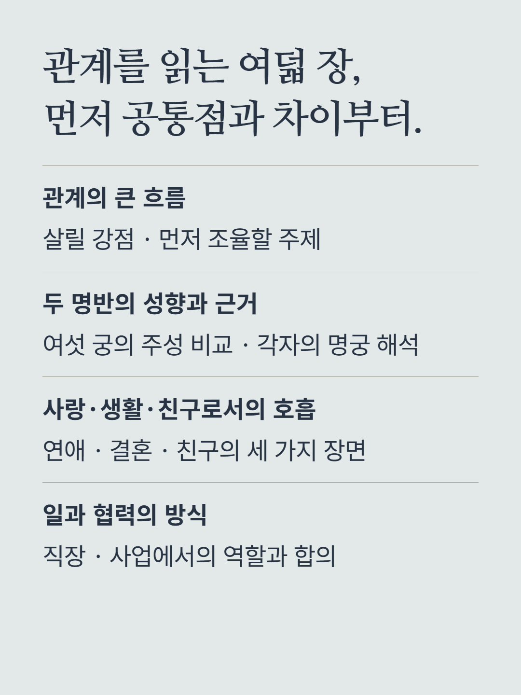
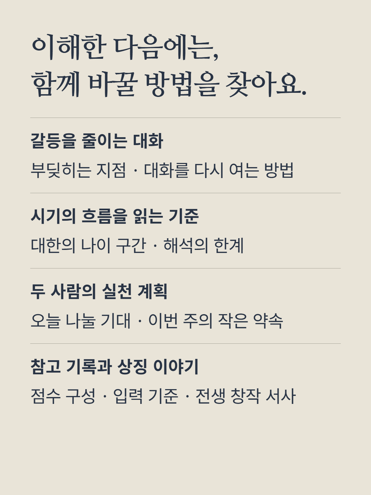
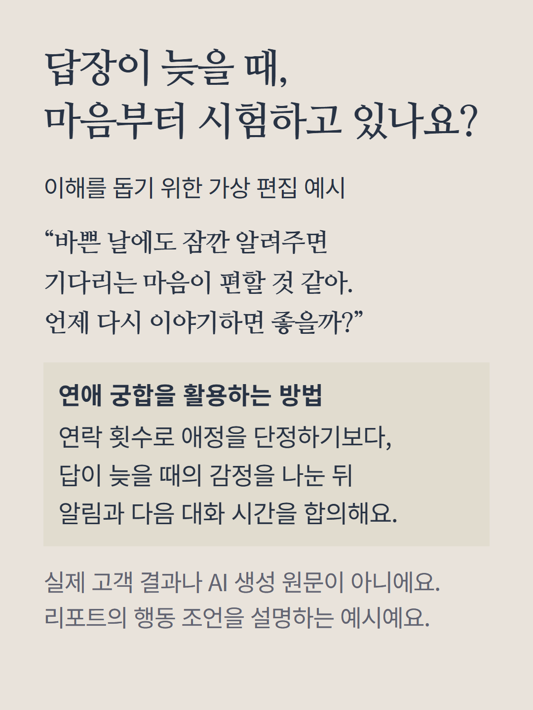
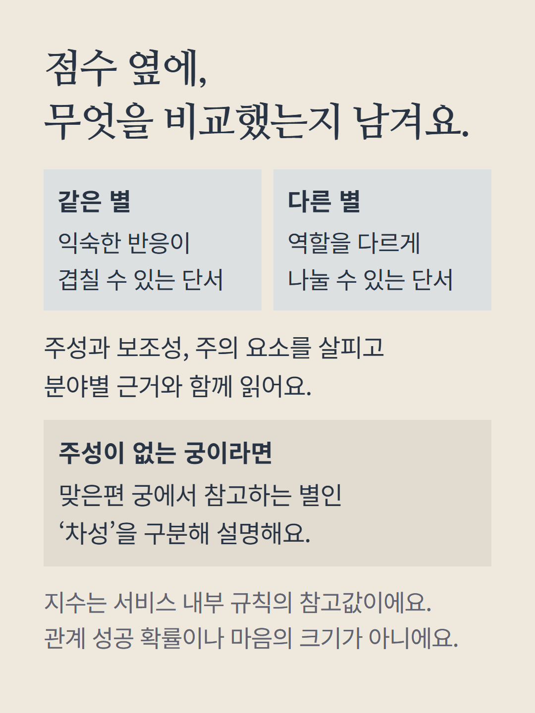
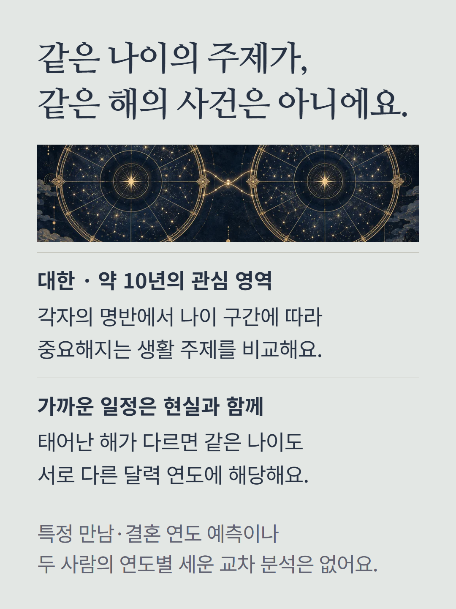
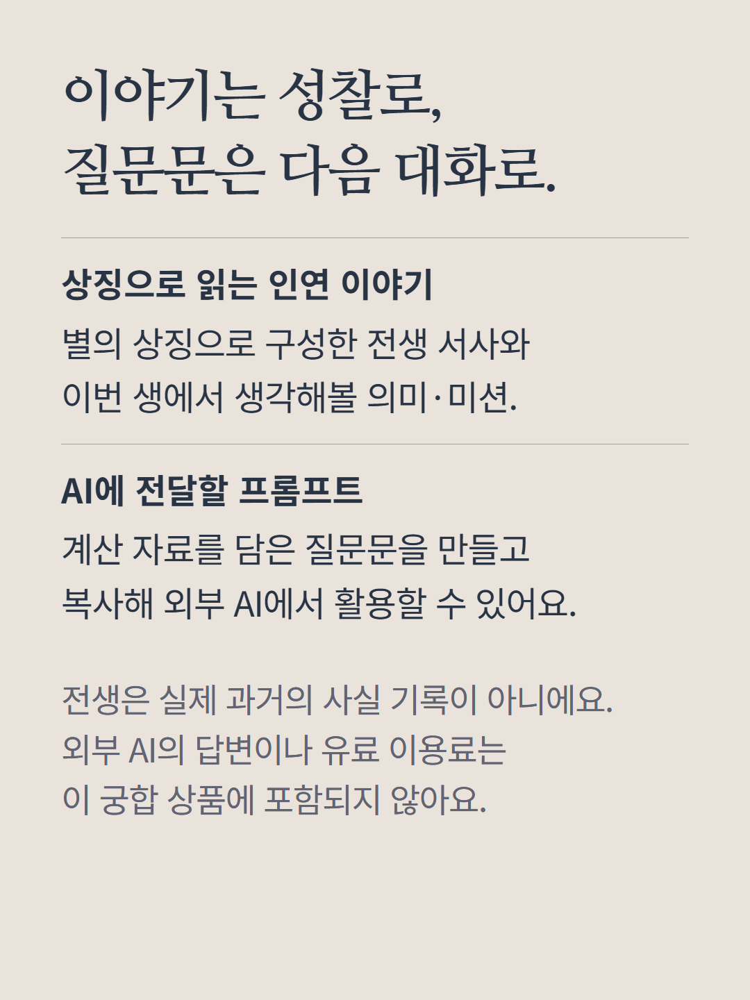
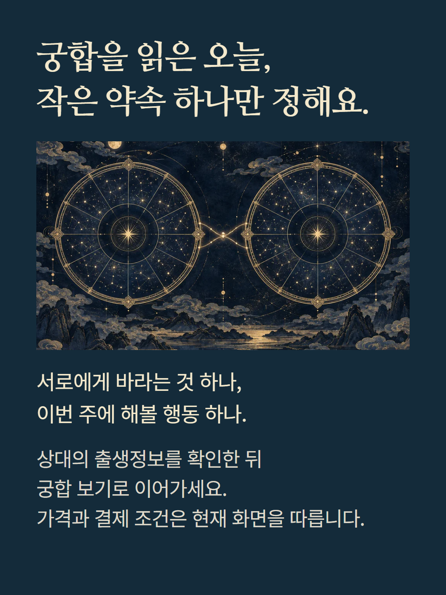

본인 명반과 상대의 양력 생년월일·출생 시각·성별·도시를 바탕으로 읽는 별도 궁합입니다. 정오 12:00은 기본 입력값이며 실제 시각인지 확인해야 합니다. 도시의 경도와 과거 서머타임을 반영한 시각 보정을 사용합니다. 관계의 큰 흐름, 여섯 궁의 주성 비교와 성향, 연애·결혼·친구·직장·사업의 다섯 분야, 갈등 조율, 시기 해석의 기준, 실천 계획, 참고 기록과 상징 이야기를 담습니다. 차성·화기·나이 구간 설명은 계산 자료에 따라 달라집니다. 점수는 내부 참고 지수이며 성공 확률이 아닙니다. 대한 비교는 나이 구간을 읽는 참고이며 특정 만남·결혼 연도나 연도별 세운 교차 분석을 제공하지 않습니다. 전생은 창작 상징 이야기이고 예시는 가상 편집입니다. 계산 자료를 담은 AI 프롬프트 만들기·복사는 포함되지만 외부 AI 답변과 이용료는 포함되지 않습니다. 기본 명반의 유료 해금과 다른 궁합·전문가 상담은 별도입니다. 가격과 결제 조건은 현재 구매 화면을 따릅니다.